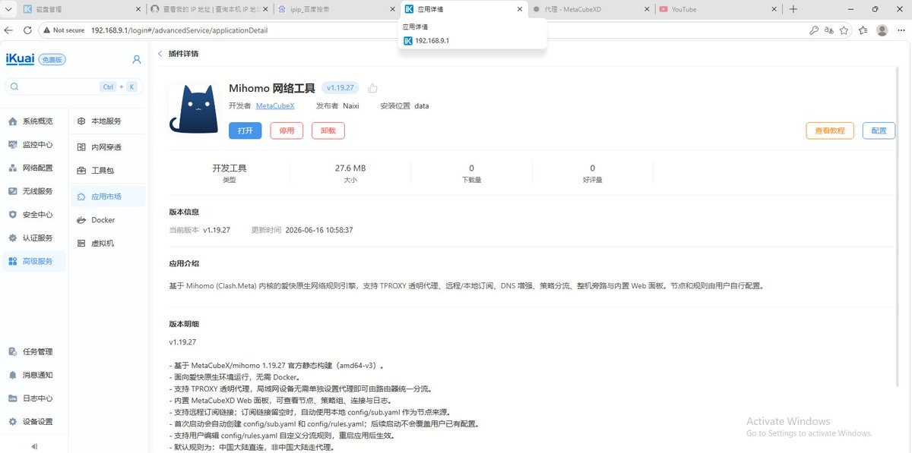
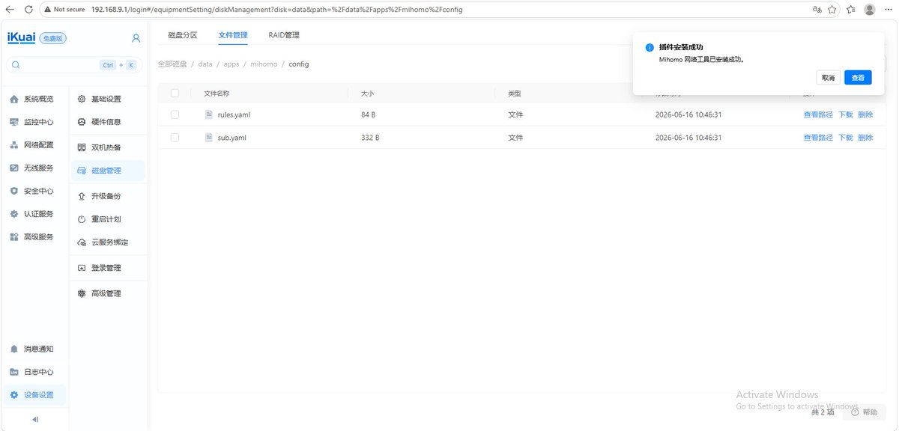
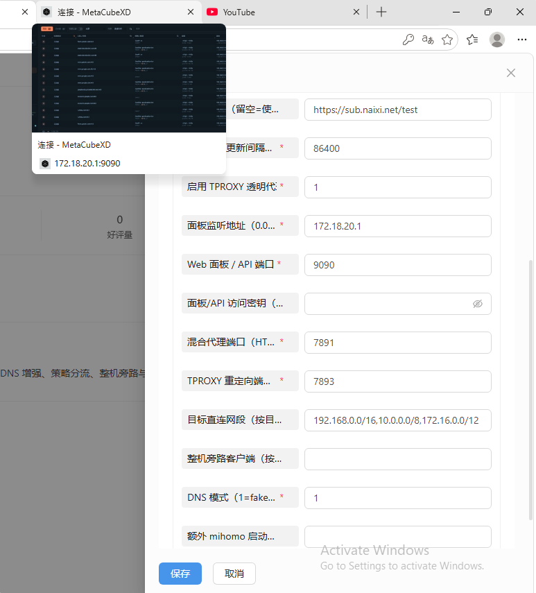
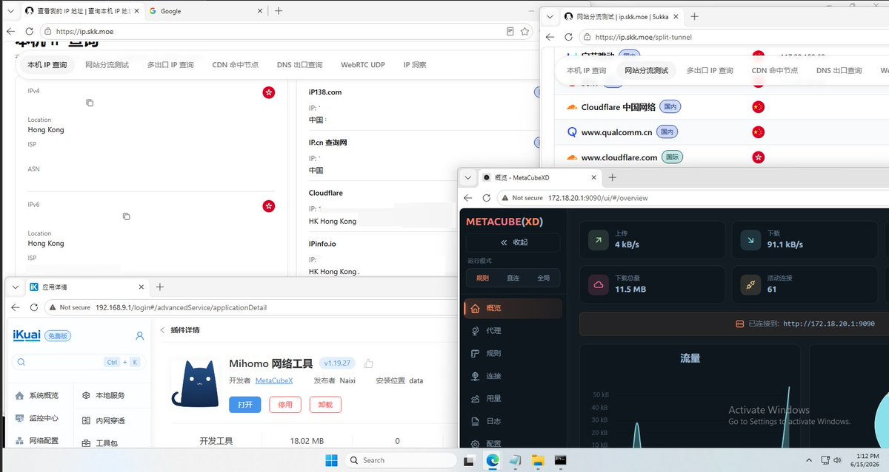

奶昔🥤
@realNyarime
爱快上原生跑Clash不是问题！
昨日为iKuaiOS全平台适配了Mihomo内核，支持Fake-IP和Redir-Host模式，用户亦可在磁盘管理中上传新的配置文件、代理规则
使用TProxy，非TUN。不动路由表，不影响流控等路由本身的功能，无法联网将恢复直连
因合规性原因暂时不提供下载、教程，插件内不含任何可用于翻墙用途的配置文件。




奶昔🥤
@realNyarime
Mihomo(native) on iKuai4🥳
在爱快路由上跑Clash比OpenClash还简单！ https://t.co/jlSrcm3cLA